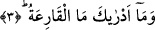
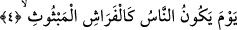

2. Nedir o kapı çalan?
Büyüklük ve dehşeti ne kadar şaşırtıcı, akıllara durgunluk verici bir hâdise. Burada
zamir kullanılacakken onun yerine bizzat Kâria kelimesinin tekrar kullanılması, onun
korkunçluğunu tekid etmek içindir.
3. O kapı çalanın ne olduğunu bilir misin?
Yâni, Kâria’nın ne olduğunu; nasıl olduğunu sana bildiren nedir? Çünkü o Kâria’nın
azameti, neredeyse hiçbir kimsenin idrâkinin onu kavramaya yetişemeyeceği bir
seviyededir ki onu idrâk ederek sana anlatabilsin!
Bu son ifâde, Kâria’nın ne olduğunun açıklanacağı yolunda bir va‘d-i ilâhîdir ve
Allah Teâlâ bu va‘dini devam eden âyetlerle yerine getiriyor:
4. İnsanların, ateşin etrafını sarmış pervaneler gibi olduğu,
Kâria insanların etrâfa yayılmış pervaneler gibi olacakları gündür. Veya insanların,
dağların şöyle şöyle olacağı günü düşünürsen sana Kâria’nın ne olduğunu anlatır.
Buradaki “pervane”den maksad havada uçan, kendisini kandil ateşine atıp yanan
hayvandır. Burada bir teşbih yapılmıştır. O gün insanlar pervaneler gibi çok, onlar gibi
darmadağınık, onlar gibi zayıf, onlar gibi zillet içinde ve onlar gibi sağa sola koşar;
nereye gideceklerini bilemez vaziyette olurlar. Pervânelerin ateşe doğru uçuşmaları gibi
insanlar da kendilerini çağıran dâvetçiye doğru koşarlar.
Cerir bu kelimeyi bir beytinde şöyle kullanır:
Bildiğin gibi Ferazdak ve kavmi,
Alevli ateşin gözünü kör ettiği pervanelere benziyorlar!
Bu bize pervanelerin, bazı yerlerde bile olsa, çok olduklarını gösteriyor.
Buna göre Sa’di Müftî’nin “«Ferâş» çokluğuyla meşhur değildir ki mahşer halkının
onlara benzetilmesi doğru olsun! Kelime ancak, «uçmak isteyen küçük çekirgeler»
şeklinde tefsir edilirse o zaman mahşer halkı «ferâş»a benzetilebilir” şeklindeki
sözlerinin yanlışlığı da ortaya çıkar. O bu görüşüne şu âyeti delil gösterir: “Cerâdun
münteşir/Sanki etrafa yayılmış çekirge sürüsü gibi bakışları perişan (utançtan yere
bakar) bir hâlde ve dâvetçiye koşarak kabirlerinden çıkarlar.” (Kamer, 54/7).
Ancak “ferâş” kelimesi, sözlüklerde asla “küçük çekirge” olarak tefsir edilmemiştir.
İbnu’ş-Şeyh der ki: Allah Teâlâ bu âyette, dirilme anındaki mahlûkâtı, etrâfa saçılmış